SoftWoehr QCDemo User
Manual
Copyright 2000, Jack J. Woehr
P.O. Box 51, Golden, Colorado 80402-0051
Table of Contents
USE AT YOUR OWN RISK. THERE IS NO GUARANTEE OR WARANTEE FOR THIS
FREE SOFTWARE. QCDemo can modify files and settings on any AS/400
to which it is connected. To the best of our belief, it performs exactly
what you direct it to do, which is dangerous enough, isn't it? Other slightly
dangerous aspects of JTOpen itself include the following:
-
Your logins are real AS400 logins!
-
Three password failures and OS/400 may lock you out of your account until
QSECOFR deals with it.
-
YOUR LOGINS ARE ENCRYPTED BUT YOUR DATA GO OVER THE NETWORK UNENCRYPTED.
-
There is indeed a SecureAS400 component in the JTOpen toolkit, but your
author didn't use it in QCDemo.
To run QCDemo you need the following which are not provided with QCDemo:
-
The Java environment.
-
IBM's JTOpen
toolkit for the AS/400.
-
An AS/400 which is accessible via TCP/IP from the machine on which QCDemo
runs.
-
We have not tested QCDemo running on an AS/400 under the RemoteAWT.
Make sure the following are in your classpath, or add them via the -classpath
argument to the Java environment:
-
The JTOpen jar file jt400.jar
-
The QCDemo jar file qcdemo.jar
The main class of the QCDemo jar file is
com.SoftWoehr.JTOpenContrib.QCDemo.QCDemo
Enter a command appropriate to your installation to run the main class
of the QCDemo jar file, such as
java com.SoftWoehr.JTOpenContrib.QCDemo.QCDemo
QCDemo opens a window with a tabbed notebook in it. Each tab demonstrates
one or more beans from the JTOpen project and offers access to different
resources. The tabs should be self-explanatory. Use the widgets which the
tab pane presents to operate on your AS/400, or flip to another tab to
perform a different task. Please remember when you are connected to
your AS/400 that any changes you make using QCDemo are real!
Each tab pane allows you to make a connection to an AS/400 independently
of the other tab panes. Thus, all the tab panes can be connected to the
same AS/400 or to different AS/400s. You can change the connection of any
page. Connections are managed centrally so that resources are used economically.
There is a tab pane for seeing the managed connections; its tab says "Connection
Manager".
Help for using QCDemo is provided by this document and by flyover text
which pops up over different fields and buttons if you leave the mouse
pointer sitting over these fields and buttons for a few seconds.
Much of the data returned by JT400 components is in the form of graphic
objects having their own popup menus. Try right-clicking on graphic objects
returned in the windows of QCDemo; often more information can be returned
and operations performed on the target AS400 in this fashion.
There are currently ten (10) tabs to the QCDemo notebook. They are described
and illustrated below in their notebook order.
The Command Tab illustrates JTOpen's AS400CommandButto and allows you to
execute a non-interactive command on the AS/400. You are informed of completion
of the command and any error messages are returned.
-
Enter the name of the server.
-
Press the Set System button.
-
Enter the command and press enter.
-
The command button is now set to the command and its legend changes.
-
Press the button to execute the command.
-
Wait for the completion message before continuing.
Below, the execution of a successful command is illustrated.
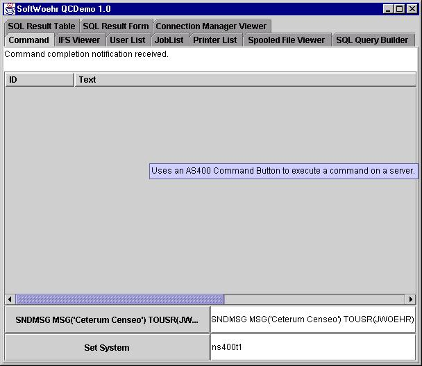
Below, the execution of an unsuccessful command is illustrated.
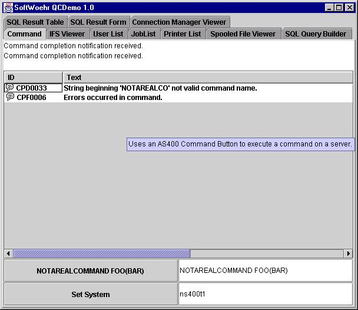
The IFS Tab allows you to navigate the file system. Clicking on graphic
objects returned frequently returns more information. Please note that
while your author has set the hourglass "wait" cursor for the original
load of the IFS data, the returned graphic components don't do the same.
Therefore, if you click on an object and the window seems to lock up, it's
just the component fetching more data.
-
Enter the system name
-
Press the Set System button.
-
Enter the IFS path you wish to explore.
-
Press the Set IFS Path button.
You may also switch views between
-
Explorer
-
Details
-
List
-
Tree
views by using the clearly labeled buttons provided for this purpose.
Below, a session with the IFS Tab in an explorer view is illustrated.
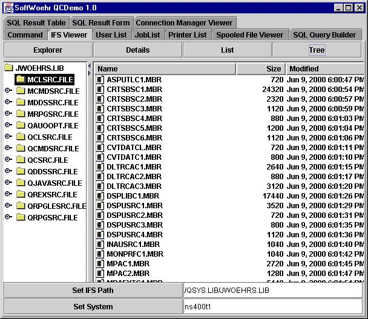
The User List Tab returns a list of those users whose profiles you are
authorized to access on the server of your choice.
-
Enter the system name.
-
Press the Get User List button.
Below, a session with the User List Tab is illustrated.
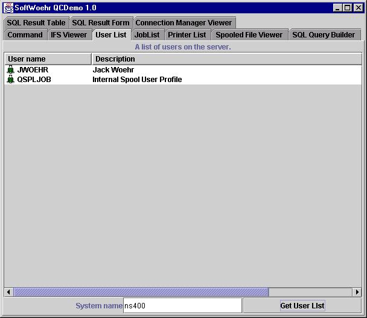
The Job List Tab returns a list of active jobs you are authorized to access
on the server of your choice.
-
Enter the system name.
-
Enter the selection criteria or *ALL.
-
Press the Get User List button.
NOTE that if you ask for jobs you aren't authorized to see, you
may receive many, many error dialog popups, one after another, one or two
for each job!
Below, a session with the Job List Tab is illustrated.
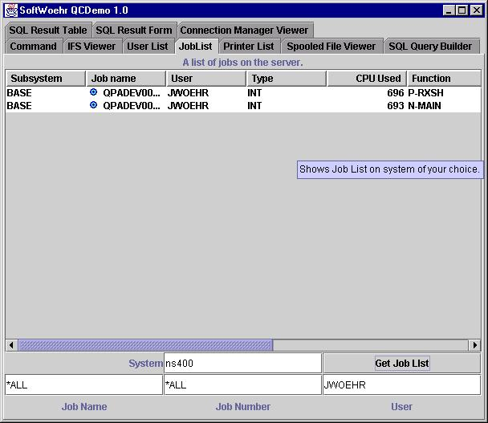
The Printer List Tab returns a list of printers and documents on the server
of your choice.
-
Enter the system name.
-
Enter the selection criteria or *ALL.
-
Press the Get Printer List button.
NOTE that this panel may come up with the separator bar all the
way over to the left hiding the printer list. Just grab the bar with the
mouse and slide it to the right. (See Bugs.)
Click on a printer to see its documents.
Below, a session with the Printer List Tab is illustrated.
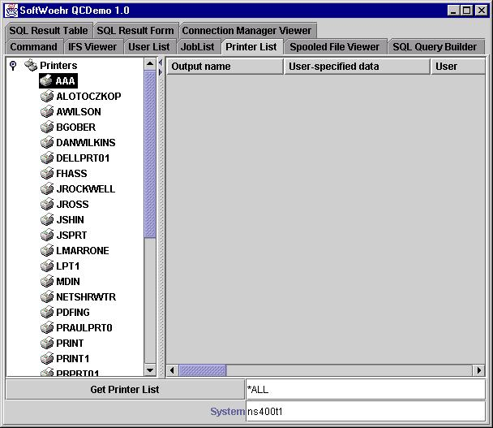
The Spooled File Viewer Tab returns a printable WYSIWYG view of spooled
files on the server of your choice.
-
Enter the system name.
-
Enter the spooled file name.
-
Enter the spooled file number
-
Enter the job name which produced the spooled file.
-
Enter the user name which produced the spooled file.
-
Enter the job number which produced the spooled file.
-
Press the View Spool File button.
NOTE that since graphic data is transferred in this operation it
may take a bit of time.
Below, a session with the Spooled File Viewer Tab is illustrated.
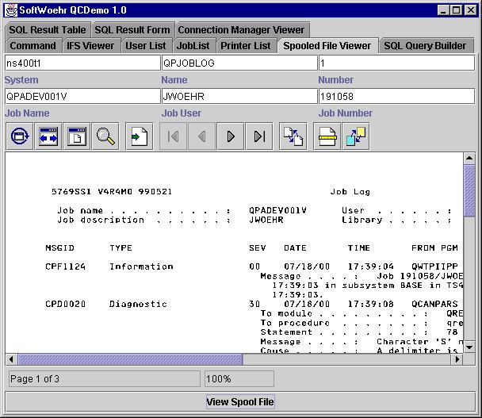
The SQL Query Builder Tab presents a JTOpen SQL Query Builder pane. You
can create SQL queries and execute them, sending the results to either
the SQL Result Table Tab or the
SQL
Result Form Tab.
-
Choose a driver from the radio buttons offered. The URL will then be partially
filled in by QCDemo.
-
If you choose "Custom" you must enter the full classname of the driver
you wish to load, as well as edit the JDBC URL to suit what that driver
expects.
-
QCDemo assumes that the custom driver possesses a class static method which
will register the driver. QCDemo does not attempt to register the custom
driver.
-
Finish the partial URL by adding the server name and any other JDBC URL
information such as
-
Database
-
Username
-
Password
-
Press the Connect Now button.
-
If you connect successfully, you are now ready to formulate queries.
-
See the JTOpen documentation for more information on using the SQL Query
Builder itself.
-
When you wish to execute the query, press either Do Query button depending
on which Result Tab you wish the results of your query to go to.
-
Flip to the Result Tab of your choice to see the results of your query.
Below, a session with SQL Query Builder Tab is illustrated.
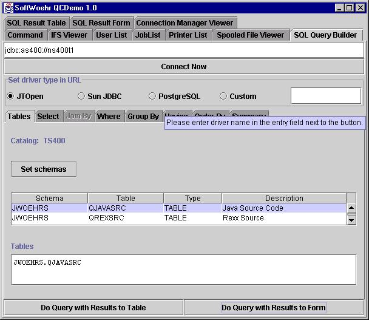
See also the SQL Result Table Tab
and SQL Result Form Tab.
The SQL Result Table Tab shows the results of using the SQL
Query Builder Tab in a table, as illustrated below.
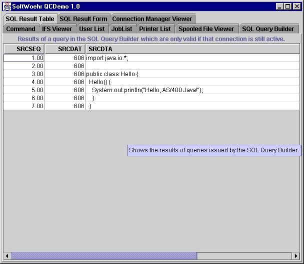
The SQL Result Table Tab shows the results of using the SQL
Query Builder Tab in a form, as illustrated below.
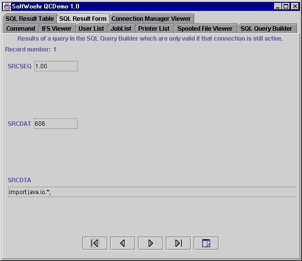
The Connection Manager Tab shows the QCDemo simple connection manager's
current status. This view does not update itself. You must push the Refresh
button to update the view.
The display of the Connection Manager Tab is illustrated below.
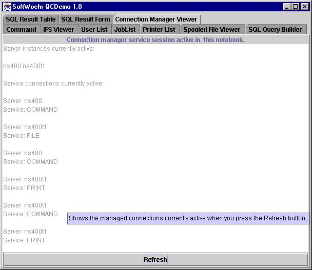
There is more information about the Connection Manager in the QCDemo
Programmer Manual.
-
Your author has not really mastered window resizing issues with JTOpen
JavaBean component windows. With certain panels such as the IFS
Tab, when they load their data they occasionally resize themselves
so that either their draggable panel separator bar is over to one side
of the screen hiding the data, or they redraw a bit small. You can usually
straighten this effect out by moving separator bars with your mouse.
-
Some panels misbehave a bit if you fail to connect or if you repeatedly
do not log on correctly. Usually poking around with the mouse (not too
much or too rapidly!) and waiting a while will straighten this out.
-
Some of the JTOpen components themselves are not terribly graceful about
a large number of errors, e.g., when you ask for a list of all jobs and
there are many jobs which you don't have authorization for. Try it yourself
if you are bored but patient!
-
The connection manager is extremely simplistic and serves only as an illustration,
e.g.:
-
It thinks AS400 and as400 are two different machines.
-
It may have the service names wrong for the services actually used.
-
Your author was learning the Sun Forte IDE at the same time as experimenting
with JTOpen. You will notice some of the panels are better designed than
others. The better designed ones were done later in the week :-).
-
Please report other bugs you find to the author, Jack
J. Woehr (jax@well.com)
Fairmount, Colorado July, 2000